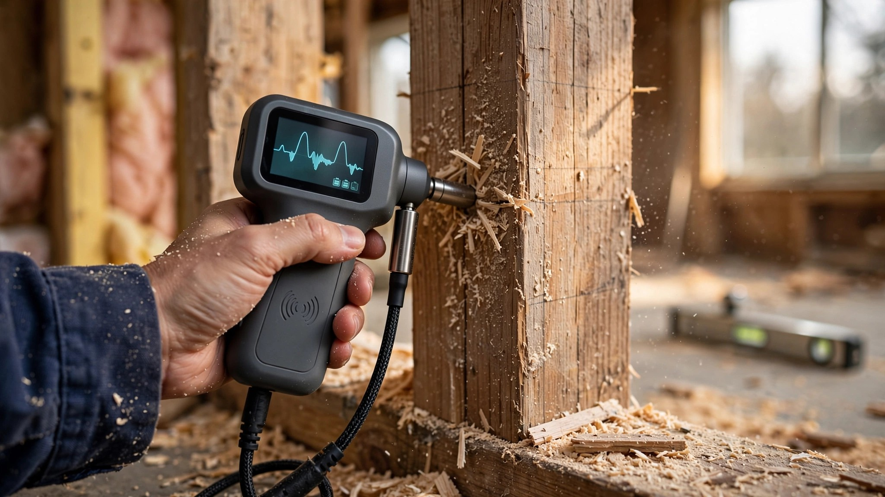

Your Termite Inspector Brought a Flashlight. The AI Brought Acoustic Sensors, Radar, and Thermal Imaging.
Termites cause $6.8 billion in property damage every year in the United States, none of it covered by standard homeowner insurance. A traditional WDO inspection takes 30 minutes with a flashlight and a probing tool. AI-driven sensor fusion can detect colonies inside sealed walls non-destructively. One approach has an 83% accuracy rate. The other has radar.

A friend of mine closed on a $640,000 ranch house in Charlotte last spring. Three-bedroom, half-acre lot, good school district. The WDO report came back clean. Forty-seven days after closing, his wife noticed sawdust trails behind a baseboard in the master bedroom. By the time Terminix finished the scope, the subterranean colony had been active for an estimated 18 months, had compromised two floor joists and a section of rim board, and the remediation bid landed at $11,200 before structural repair.
His inspector had spent 25 minutes in the crawlspace with a flashlight and a screwdriver, and the inspector did nothing wrong by any standard the industry recognizes: he followed protocol, tapped the accessible wood, looked for shelter tubes, checked the visible framing, signed the report, and collected his $125 fee. The colony was behind finished drywall in the master bedroom wall cavity, eating its way through the bottom plate from below, in a space that no visual inspection methodology on Earth could reach without cutting holes in walls that didn't belong to the inspector.
This is the central absurdity of residential termite inspection in 2026: we protect $400,000 to $800,000 assets using a detection methodology that fundamentally cannot see behind the surfaces where termites actually live and feed and reproduce.
$6.8 Billion Nobody Insures
According to the National Pest Management Association, termites cause more than $6.8 billion in property damage annually in the United States. That number lands differently when you learn that standard homeowner insurance policies exclude termite damage entirely. Flood damage, fire damage, wind damage, theft. Covered. Termites eating your floor joists from the inside out over three years? Your problem.
Average treatment cost runs $263 to $1,032 for chemical application, per HomeAdvisor's 2025 data, and that figure covers only the termiticide itself. If the colony has been active long enough to compromise structural members, whole-house fumigation and tenting costs $3,000 to $60,000 depending on square footage, and structural repair runs another $2,000 to $15,000 per affected area on top of that. San Francisco residents pay even more, with one-time treatment ranging from $400 to $1,710 for chemicals alone and tenting running $10 to $34 per linear foot of perimeter.
Now compare that to pre-construction termite protection, where the economics shift so dramatically that the comparison barely qualifies as a comparison at all. Soil treatment with fipronil or imidacloprid during foundation work costs $1 to $3 per square foot. Physical barriers like stainless steel mesh (Termi-Mesh) run $1.50 to $3 per square foot. Borate-treated framing lumber adds $0.50 to $1.50 per treatable square foot. Total pre-construction protection for a typical 2,500-square-foot home runs $800 to $2,500, which is twenty to forty times cheaper than post-infestation remediation on a mid-range scenario, and the gap widens further when you factor in structural repair costs that chemical treatment during construction would have prevented entirely.
What the Sensors Can Actually Do
A 2025 systematic review published in MDPI Sensors categorized every known termite detection technology using NASA's Technology Readiness Level framework, a nine-point scale from initial concept to full deployment. The findings reorganize what most people assume about this field.
Visual inspection, the method your WDO inspector uses, rates TRL 9, meaning it is fully mature, widely deployed, and universally accepted, though also fundamentally limited to surfaces that a human eye can reach. Acoustic emission sensing also hits TRL 9, which means the technology for listening to termites eat wood through walls has been successfully demonstrated in real-world operational environments for years, alongside ground-penetrating radar and electrical resistivity testing, none of which are experimental laboratory curiosities anymore because all of them have operational track records in structural monitoring applications.
AI-integrated multi-sensor systems, the ones that combine acoustic, thermal, and moisture data through machine learning fusion, currently sit at TRL 7. That means demonstrated functionality in operational environments, needing further standardization before mass deployment. The review documented deep learning models, including convolutional neural networks analyzing GPR signals for subsurface anomalies and object detection architectures like YOLO and Mask R-CNN enabling automatic recognition of termite activity in UAV thermal imagery.
The most interesting finding: AI-driven data fusion frameworks that integrate acoustic signals, volatile organic compounds from termite metabolism, and remote sensing data in real time are showing detection reliability that no single-sensor approach matches alone. Cross-modal attention mechanisms, documented in a 2024 Chinese patent filing, fuse Mel frequency cepstral coefficients from acoustic sensors with temperature and humidity feature vectors to generate real-time termite probability assessments. The system learns environmental baselines for each monitored structure and flags deviations that correlate with colony activity.
Translation: the AI listens for chewing sounds humans can't hear, measures heat signatures from colony metabolism, tracks moisture patterns that termites create, and combines all three into a probability score. Continuously. Without cutting a single hole in your drywall.
Acoustic Emission: Listening Through Walls
Termites are not quiet. They chew. Worker mandibles generate acoustic emissions in the 100 Hz to 15 kHz range as they consume cellulose, with significant energy extending into the ultrasonic range above 20 kHz where ambient household noise drops to near zero. A study published in Wood Science and Technology demonstrated that Reticulitermes termite activity produces detectable non-audible acoustic signatures that can be located spatially within structural members, meaning the sensor can tell you not just that termites are present but approximately where in the wall they are working.
Discriminant analysis applied to these acoustic features achieves 83.75% detection accuracy using relatively simple classification algorithms, per research compiled in the MDPI monitoring systems review. Machine learning models applied to acoustic emission data from related structural monitoring applications have achieved accuracy values exceeding 95%, suggesting significant headroom for improvement as training datasets for residential termite activity grow.
The limitation is honest and worth stating at full strength: ambient noise interference remains the primary engineering challenge for residential acoustic termite detection. A busy household generates its own acoustic profile from HVAC systems, appliances, foot traffic, plumbing, and pets, all of which produce vibrations that sensors must distinguish from the far subtler mandible sounds of termites consuming cellulose fibers inside wall cavities. Working in the ultrasonic range above 20 kHz mitigates most of this interference because human-generated noise concentrates well below that threshold, but sensor placement, calibration, and signal processing sophistication all matter substantially, and the difference between a well-calibrated system and a poorly calibrated one can mean the difference between catching a colony at 50 workers and missing one at 50,000.
Why Nobody Uses This on Houses
Equipment cost is part of the explanation, though perhaps not the most interesting part. A Termatrac T3i, the most widely deployed professional device combining microwave radar, thermal imaging, and moisture detection in a single handheld unit, costs approximately $8,000 to $10,000, while a flashlight costs $15 and a probing screwdriver costs even less than that. The math for a pest inspection company charging $75 to $150 per WDO inspection does not accommodate an $8,000 tool that requires specialized training to operate and interpret, and even amortized across hundreds of inspections, the per-unit cost increase would push WDO inspection pricing from $125 to something approaching $300 to $400, a range where homebuyers already resent paying for inspections they view as bureaucratic checkboxes rather than genuine protection against one of the most expensive non-insured risks they face as property owners.
Continuous monitoring systems compound the problem. Installing acoustic sensors during construction, the optimal time since walls are open and sensor placement behind drywall is trivial, adds $500 to $1,500 in hardware per home. Connected monitoring with cloud-based AI analysis adds $10 to $25 per month in subscription costs. Over a 30-year mortgage, that monitoring subscription costs $3,600 to $9,000, not far from the average remediation cost for a moderate infestation. The value proposition only becomes obvious if you catch an infestation early enough to avoid structural damage, which is precisely the scenario where these systems shine and traditional inspections fail.
And the regulatory environment does not help. IRC Section R318 requires termite protection in "termite probable" areas, which covers essentially every state except Alaska. But the code mandates either chemical treatment, physical barriers, or termite-resistant materials. It says nothing about detection technology. It says nothing about monitoring. A builder who installs a $1 per square foot soil treatment has fully satisfied the code. A builder who installs a $4,000 acoustic monitoring system in addition to the soil treatment has spent money on something no inspector will require, no appraiser will value, and no code official will credit.
So the technology exists. The economics favor it for high-value homes in high-risk zones. And the market ignores it almost completely because the regulatory framework treats termite protection as a one-time construction activity rather than an ongoing monitoring challenge.
Where the Math Actually Works
Run the expected value calculation for a homebuyer in a high-risk termite zone. Southeast US states, Gulf Coast, Hawaii, parts of California. Annual termite encounter rates in these regions exceed 20% for structures without active monitoring.
A traditional WDO inspection costs $75 to $150 and has a detection rate for behind-wall infestations that the industry does not formally publish, because publishing that number would be devastating. Conservative estimates from claims data suggest roughly 60% detection for active infestations with accessible evidence. AI-sensor-augmented inspection, using a Termatrac T3i or equivalent multi-sensor platform, costs an estimated $250 to $400 and pushes detection rates toward 85% to 95% based on published sensor accuracies for individual modalities and documented improvements from data fusion.
Average post-detection remediation plus structural repair costs $8,200, per HomeAdvisor composite data. With a 25-percentage-point detection rate improvement and a 20% base encounter rate, the expected value of upgrading from traditional to AI-augmented inspection is: 0.20 (encounter rate) times 0.25 (detection rate delta) times $8,200 (avoided cost) = $410 in expected savings per inspection. Against a price premium of $125 to $275 for the upgraded inspection, the expected value is positive in every high-risk market.
For new construction specifically, the calculation is even cleaner. During framing, wall cavities are open. Acoustic sensors can be placed behind drywall for approximately $2 per sensor point, with 8 to 12 sensors providing adequate coverage for a typical single-family home. Total hardware cost: $16 to $24, installed by an electrician already on site running low-voltage wiring. Connected to a monitoring hub with cellular backhaul, the incremental cost during construction is $200 to $400 in materials and 30 minutes of install time. Post-construction retrofit of the same system requires opening walls, running cable, patching drywall: $1,500 to $3,000 minimum. A 5x to 10x cost multiplier, following the same pattern we see with smart water shutoffs, structured wiring, and every other technology that is cheaper to install during construction than to retrofit.
The Chemical Argument Deserves Its Due
Soil-applied termiticides work, and they work well enough that the strongest case against AI monitoring rests on the demonstrated performance of chemistry rather than skepticism about the sensors themselves. Termidor (fipronil) provides a continuous chemical barrier in treated soil that kills subterranean termites on contact and through the colony's social grooming behavior, where contaminated workers transfer the active ingredient to nestmates, and field studies document 95% or greater colony elimination rates within 90 days with treatment persistence in soil lasting 5 to 10 years depending on soil chemistry and rainfall patterns.
BASF's Trelona ATBS (Always Active Termite Baiting System) takes a different approach: in-ground stations with bait matrix that termites consume and share with the colony, delivering a slow-acting insect growth regulator that collapses the colony over 60 to 90 days, while Corteva's Sentricon system pioneered this approach and remains the most widely deployed bait monitoring system in the US market, with both technologies backed by decades of field data and commercial deployment.
The strongest case against AI monitoring: chemical barriers and bait systems already provide 95%+ protection at $1 to $3 per square foot during new construction, which means that adding $500 to $1,500 in monitoring hardware and $10 to $25 per month in cloud subscriptions addresses a residual risk that chemical treatment already reduces to single-digit probability. For a $300,000 home in a moderate-risk zone, the additional AI monitoring may never generate a return because the chemical barrier held and would have continued holding regardless of whether anyone was listening through the walls. For a $1.2 million home in Savannah where the Formosan subterranean termite population has been documented consuming entire structural systems despite active chemical treatment, the calculation inverts entirely, and the monitoring system that seemed like an expensive redundancy becomes the only thing standing between a manageable repair and a six-figure remediation.
Chemical barriers are not perfect, and the failure modes that matter most are precisely the ones that no annual visual inspection can catch. Gaps in treatment coverage from incomplete soil application, settling foundations that crack the chemical barrier and create untreated corridors, plumbing penetrations that bypass the treated zone entirely, landscaping changes that alter drainage patterns and dilute termiticide concentrations in critical areas. Every one of these failure modes is invisible until termites exploit it. Monitoring catches the failure. Treatment alone waits for damage.
What a Builder Should Do Now
If you are building in a high-risk termite zone (and the IRC's "termite probable" map covers 46 states, so you probably are), four decisions are actionable during construction at marginal cost.
Specify borate-treated bottom plates and rim boards, because Boracare application costs $0.50 to $1.50 per treatable square foot and provides permanent protection that does not degrade with soil chemistry changes, making it one of the most reliable and least expensive termite prevention measures available for new construction despite being dramatically underused in production building where the cost per unit matters more than the cost per problem avoided.
Install termite monitoring sensor rough-in during framing, running low-voltage conduit to 8 to 12 points in exterior walls and foundation-adjacent framing and terminating it at a central location near the electrical panel. Even without connecting sensors today, the conduit costs under $100 in materials and makes future sensor installation a plug-in operation instead of a wall-opening operation, which is the same logic that drives structured wiring for networking, pre-wiring for smart water shutoffs, and every other technology that costs a fraction to install during construction compared to retrofitting through finished surfaces.
For custom homes above $800,000, include active acoustic monitoring in the scope. $200 to $400 in materials during construction versus $1,500 to $3,000 retrofit. Monthly monitoring costs $10 to $25. Over a 10-year period, you spend $1,400 to $3,400. One caught infestation saves $8,000 to $25,000 in remediation and structural repair, not counting the value of catching it before structural damage compounds.
For homebuyers in high-risk markets, requesting a sensor-augmented WDO inspection is the single most cost-effective upgrade available during the purchase process, because not every pest company offers this service yet but Termatrac-equipped inspectors exist in most major metro areas, and the price premium over a flashlight-and-screwdriver inspection runs only $100 to $250. On a $500,000 purchase where termite damage is explicitly excluded from your insurance policy, that premium amounts to less than the cost of the home inspection itself while providing meaningfully better detection coverage for the one category of structural damage your insurer has decided you can handle on your own.
Limitations
Most published AI termite detection research originates in lab settings or targets large infrastructure like embankments, dams, and heritage buildings. Residential deployment data is thin. Detection accuracy figures of 83% to 95% come from controlled environments, and real-world performance with ambient noise, varied construction types, and multiple WDO species is less well documented.
Cost estimates for AI-augmented inspections are derived from equipment costs and published per-inspection productivity data rather than from large-scale residential deployment pricing. No major US pest control company currently publishes pricing for sensor-augmented residential WDO inspections as a standard service offering. The expected value calculation uses composite data and estimated detection rates that have not been independently verified through a controlled residential field trial.
Pre-construction monitoring cost estimates assume sensor installation concurrent with low-voltage wiring during framing. Retrofit costs vary dramatically by construction type, and the 5x to 10x multiplier represents a mid-range estimate for standard wood-frame construction with drywall finish.
We could not independently verify Termatrac T3i detection accuracy in published blind trials for residential-scale applications. Manufacturer claims and published academic sensor performance data may not directly translate to field inspection conditions.